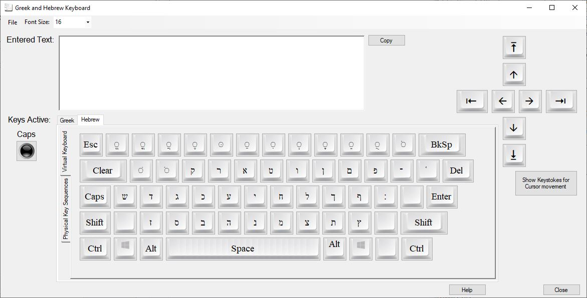
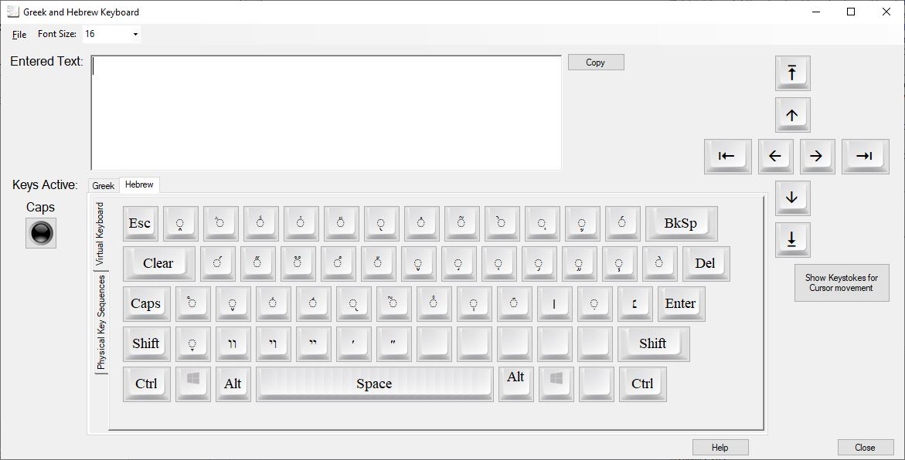
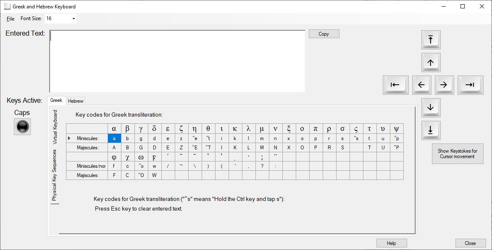
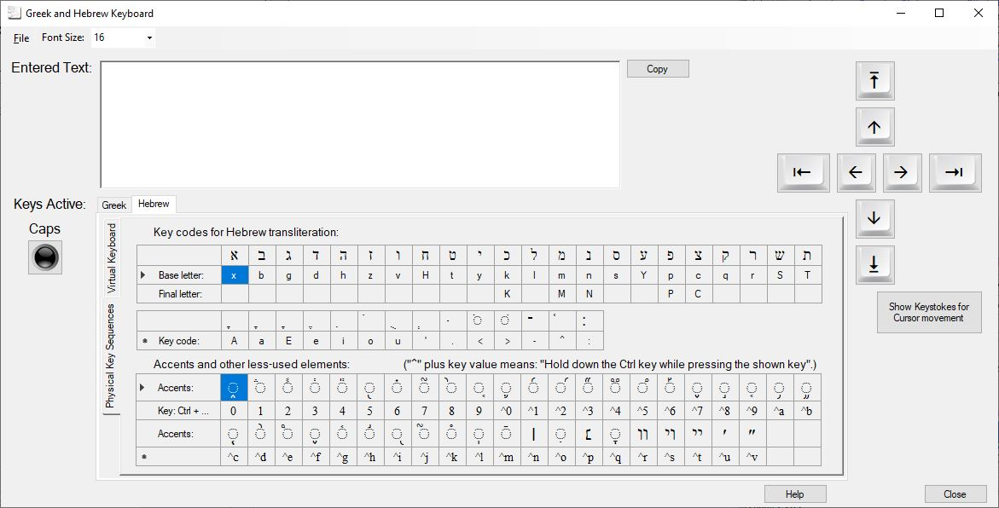
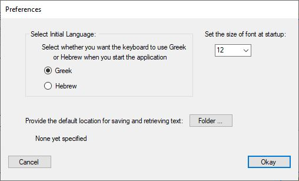

I think it is reasonably self-explanatory, but here's a brief overview. When the program starts, by default it will take you to the Greek keyboard:
Clicking on any of the main Greek characters using your mouse will add them to the text box (Entered Text) at the top of the window. You can add a breathing, accent, iota subscript or diaeresis to the preceding character by clicking on the relevant key after you have entered the character to which the sign will be attached . (By "preceding" I mean the character to the left of the hair-line cursor.) Note that, if you are not sure which symbol is which (because some are very small), hover your mouse over a key and the hint will tell you what that key is. Disclaimer: I have not made any attempt to prevent unrealistic or illegal use of symbols, so it is down to you to add only those elements that are allowed by Greek rules. The only non-Greek keys that currently function are:
Clicking either one of the Shift keys or the Caps key will take you to the Majiscules, as you would expect:
The difference between these two keys is, as you would expect: pressing Shift will revert to the main keyboard, once you have clicked on an accent or other key; Caps, on the other hand, will remain in the shifted keyboard. Note that you will always know that you are in Caps Lock mode because the Caps light will be illuminated. Click again on the Caps key to return to the normal miniscules.
Selected the Hebrew tab will take you to the Hebrew keyboard:

As before, clicking on any of the main Hebrew characters using your mouse will add them to the text box (Entered Text) at the top of the window. The various vowels and key symbols ar found on the top row of keys (and the mappaq next the to Pe key): clicking these will add the relevant vowel or symbol to the preceding character. (By "preceding" I mean the character to the right of the hair-line cursor.) Disclaimer: I have not made any attempt to prevent unrealistic or illegal use of vowels or symbols, so it is down to you to add only those elements that are allowed by Hebrew rules.
As with the Greek keyboard, clicking either one of the Shift keys or the Caps key will take you to an alternative Hebrew keyboard which is, effectively, dedicated to accents, points and Yiddish characters:

Most of these accents and additional symbols are only used in full-text work and will probably be little used by most people.
You may prefer to use your non-Greek/non-Hebrew, physical keyboard. If so, you can do this.
You can use the physical keyboard at any time. To tell you what physical key presses relate to what Greek character or symbol, click on the Physical Key Sequences tab in the Greek tab control panel. This will tell you the way the program responds to your key presses:

Lower and upper case functions much as in English. So, "e" gives ε and "E" gives Ε. There are a few characters that vary from English and, in these cases, they are formed by holding down the Ctrl key while tapping the obvious key, as follows:
| Ctrl + ... | ... | Ctrl + Shift + ... | ... |
| e | η | E | Η |
| t | θ | T | Θ |
| s | ς | ||
| p | ψ | Y | Ψ |
| o | ω | O | Ω |
Note that we have also supplied w (= ϝ) and W (= Ϝ).
You can revert to the mouse-based keyboard at any time by cli8cking on the Virtual Keyboard tab.
First of all, select the Hebrew tab and then, as with Greek, click on the Physical Key Sequences tab. You will subsequently see the following:

This may look a little complex at first but you will soon get used to it. The top table tells you which physical keys are translated as Hebrew characters. For example, typing "m" will enter the normal Hebrew character, Mem (מ). Note that all characters that have a different terminal form can be entered as either lower case characters (for the non-terminal form) or upper case, for the terminal form. For example, typing "M" will enter the terminal Mem (ם). In other cases, where we have two consonants with varying but similar pronunciation (such as he - ה - and heth - ח), the same English character will be used but one will be lower case and the other upper case.
The transliteration does not follow any standard protocol and the rationale for specific characters is as follows:
| Hebrew Character | Keyboard Equivalent | Rationale |
| א | x | It has a similar shape |
| ה | h | |
| ח | H | As explained above |
| ו | v | Following modern Hebrew pronunciation |
| ט | t | |
| ת | T | |
| כ | k | |
| ך | K | |
| מ | m | |
| ם | M | |
| נ | n | |
| ן | N | |
| ס | s | |
| ש | S | The sin or shin dot is added like a vowel, afterwards |
| צ | c | This was a bit of a compromise |
| ץ | C | |
| י | y | As you'd expect |
| ע | Y | Again, because it has a similar shape. (I toyed with an apostrophe or an exclamation mark but I decided this is simpler) |
| פ | p | |
| ף | P |
Vowels follow a similar rationale where I have tried to use lower case for short vowels and upper case for long vowels (where they are not represented by consonants). Note that the qamats is also used for the short o (although the qamats qatan is provided, as we will describe below).
The bottom table shows how you can add less used symbols - mainly accents. These are less intuitive and less easy to memorise. The first ten characters are found simply by using the numbers 0 to 9. The rest are a combination of the Ctrl key and a number or letter. There is no real rational in which physical key gives which character: they are simply in Unicode sequence.
In all cases, if you hover over the Hebrew character, a small prompt will appear to tell you what it is. This is because some symbols are very small and difficult to see clearly.
Note, in addition, that the arrow keys have been replaced by the four keyboard arrow keys. If used on their own, they will move you one character or line in the indicated direction. If you hold down the Ctrl key while tapping them, they will take you to the extreme in that direction. Clicking on the Show Keystrokes for Cursor movement button will open a small window that reminds you of what keystrokes provide cursor movement. This has been provided in a window that you can keep open and visible at all times, should you choose:

When you have typed in your Greek or Hebrew content, simply:
You can paste the text either by holding down the Ctrl (Control) key on your keyboard while you press the V key, or by right clicking with the mouse where you want to place the Greek or Hebrew and selecting Paste from the pop-up menu. Note, in Word, right click in the correct location and you will be presented with a pop-up menu:

Select the Keep Text Only symbol (the clipboard with an "A" in front) and it will reformat the text into the font and size that you are using. Note that, if your current text does not support Unicode characters, you may end up with gibberish. Also, if you are using some other word processor, it's worth doing some research to find out whether it offers you a similar facility.
Clicking on the File menu option on the application's main menu, and then Preferences ... will display an additional dialog:

The first section will allow you to configure whether the application starts in the Hebrew or Greek keyboard. To the right of this section is a combo box that will determine the size of font in the Entered Text edit box from startup. The third area allows you to specify where any snippets of text will be saved, when you select the Save option.
Note, also, that there is an option in the main menu to change font size. This will dynamically change the size of everything in the Entered Text edit box during your editing session but the application will not remember past or current sizes, other than that specified in Preferences.
| You can get in touch with me at: |
Let me know if you have insuperable problems, program errors or suggestions for improvements. Check the website for further information.